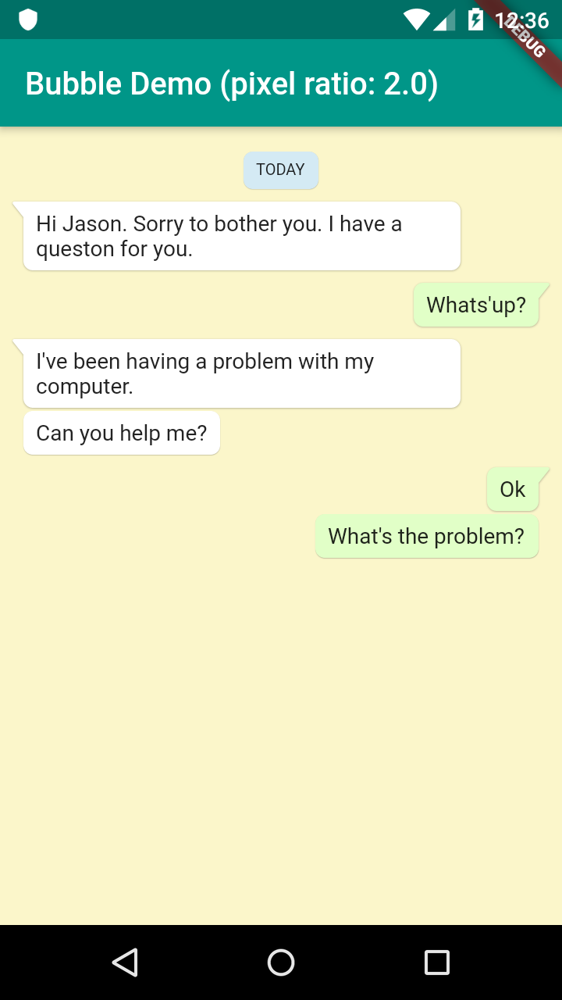

本記事はQrunchからの転載です。
吹き出しのライブラリ
Flutterで吹き出しを出すためのライブラリとしてBubbleがあります。こちらを使うと吹き出しを簡単に表示できます。 もう一つSpeechBubbleというライブラリもありますが、Bubbleのほうが色々オプションが設定できます。
Bubble
Bubbleを使うと以下のような吹き出しが簡単に表示できます。

最もシンプルな吹き出しの作り方は以下のようになります。
Bubble(
nip: BubbleNip.leftTop,
child: Text('Hi, developer!'),
)
Bubbleのオプション
Bubbleでは次がオプションとして選べます。
- 吹き出しの色
- 吹き出しの形状
- 吹き出しからちょこんと出ているところの位置
- 影
- マージン、パディング
欲しい機能は一通り揃っていてとても便利です。詳細はBubbleのgithubのページをご覧ください。
Bubbleの不満
素晴らしいライブラリなのですが、ちょっとだけ不満があります。 吹き出しからちょこんと出ているやつ（なんというか知らないんですが）の位置が現状は左上、左下、右上、右下しか選べません。
なので、forkして左中央に位置を指定できるようにしてみました。 https://github.com/opqrstuvcut/bubble
こちらを使うと次のように吹き出しの左中央からちょこんとあれが出せます。

コードは以下の通り。
Bubble(
nip: BubbleNip.leftCenter,
child: Text('ちょこんとでるのが左中央だよ'),
)